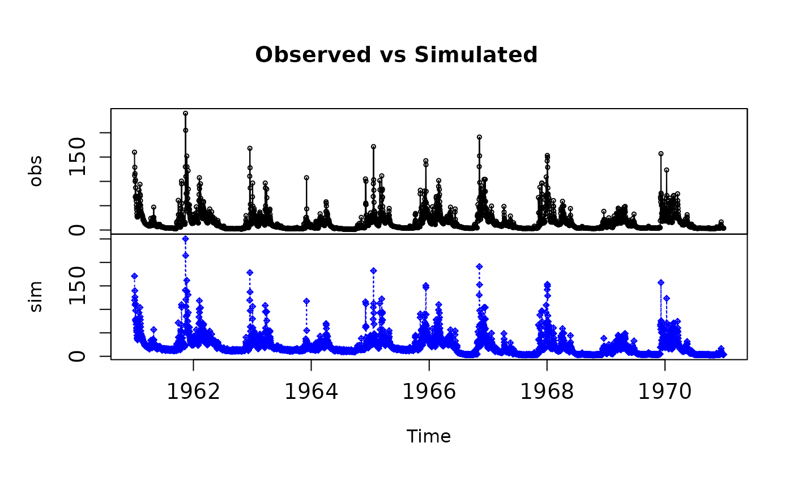
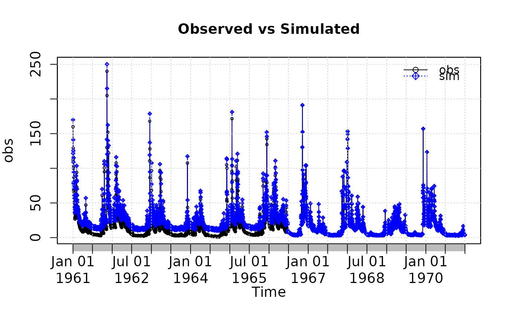

Plotting 2 Time Series
plot2.RdPlotting of 2 time series, in two different vertical windows or overlapped in the same window.
It requires the hydroTSM package.
Usage
plot2(x, y, plot.type = "multiple",
tick.tstep = "auto", lab.tstep = "auto", lab.fmt=NULL,
main, xlab = "Time", ylab,
cal.ini=NA, val.ini=NA, date.fmt="%Y-%m-%d",
gof.leg = FALSE, gof.digits=2,
gofs=c("ME", "MAE", "RMSE", "NRMSE", "PBIAS", "RSR", "rSD", "NSE", "mNSE",
"rNSE", "d", "md", "rd", "r", "R2", "bR2", "KGE", "VE"),
legend, leg.cex = 1,
col = c("black", "blue"),
cex = c(0.5, 0.5), cex.axis=1.2, cex.lab=1.2,
lwd= c(1,1), lty=c(1,3), pch = c(1, 9),
pt.style = "ts", add = FALSE,
...)Arguments
- x
time series that will be plotted. class(x) must be ts or zoo. If
leg.gof=TRUE, thenxis considered as simulated (for some goodness-of-fit functions this is important)- y
time series that will be plotted. class(x) must be ts or zoo. If
leg.gof=TRUE, thenyis considered as observed values (for some goodness-of-fit functions this is important)- plot.type
character, indicating if the 2 ts have to be plotted in the same window or in two different vertical ones. Valid values are:
-) single : (default) superimposes the 2 ts on a single plot
-) multiple: plots the 2 series on 2 multiple vertical plots- tick.tstep
character, indicating the time step that have to be used for putting the ticks on the time axis. Valid values are: auto, years, months,weeks, days, hours, minutes, seconds.
- lab.tstep
character, indicating the time step that have to be used for putting the labels on the time axis. Valid values are: auto, years, months,weeks, days, hours, minutes, seconds.
- lab.fmt
Character indicating the format to be used for the label of the axis. See
lab.fmtindrawTimeAxis.- main
an overall title for the plot: see
title- xlab
label for the 'x' axis
- ylab
label for the 'y' axis
- cal.ini
OPTIONAL. Character, indicating the date in which the calibration period started.
Whencal.iniis provided, all the values inobsandsimwith dates previous tocal.iniare SKIPPED from the computation of the goodness-of-fit measures (whengof.leg=TRUE), but their values are still plotted, in order to examine if the warming up period was too short, acceptable or too long for the chosen calibration period. In addition, a vertical red line in drawn at this date.- val.ini
OPTIONAL. Character with the date in which the validation period started.
ONLY used for drawing a vertical red line at this date.- date.fmt
OPTIONAL. Character indicating the format in which the dates entered are stored in
cal.iniandval.ini. Default value is %Y-%m-%d. ONLY required whencal.iniorval.iniis provided.- gof.leg
logical, indicating if several numerical goodness-of-fit values have to be computed between
simandobs, and plotted as a legend on the graph. Ifgof.leg=TRUE(default value), thenxis considered as observed andyas simulated values (for some gof functions this is important). This legend is ONLY plotted whenplot.type="single"- gof.digits
OPTIONAL, only used when
gof.leg=TRUE. Decimal places used for rounding the goodness-of-fit indexes.- gofs
character, with one or more strings indicating the goodness-of-fit measures to be shown in the legend of the plot when
gof.leg=TRUE.
Possible values are inc("ME", "MAE", "MSE", "RMSE", "NRMSE", "PBIAS", "RSR", "rSD", "NSE", "mNSE", "rNSE", "d", "md", "rd", "cp", "r", "R2", "bR2", "KGE", "VE").- legend
vector of length 2 to appear in the legend.
- leg.cex
numeric, indicating the character expansion factor *relative* to current 'par("cex")'. Used for text, and provides the default for 'pt.cex' and 'title.cex'. Default value = 1
So far, it controls the expansion factor of the 'GoF' legend and the legend referring toxandy- col
character, with the colors of
xandy- cex
numeric, with the values controlling the size of text and symbols of
xandywith respect to the default- cex.axis
numeric, with the magnification of axis annotation relative to 'cex'. See
par.- cex.lab
numeric, with the magnification to be used for x and y labels relative to the current setting of 'cex'. See
par.- lwd
vector with the line width of
xandy- lty
vector with the line type of
xandy- pch
vector with the type of symbol for
xandy. (e.g.: 1: white circle; 9: white rhombus with a cross inside)- pt.style
Character, indicating if the 2 ts have to be plotted as lines or bars. Valid values are:
-) ts : (default) each ts is plotted as a lines along thexaxis
-) bar: the 2 series are plotted as a barplot.- add
logical indicating if other plots will be added in further calls to this function.
-) FALSE => the plot and the legend are plotted on the same graph
-) TRUE => the legend is plotted in a new graph, usually when called from another function (e.g.:ggof)- ...
further arguments passed to
plot.zoofunction for plottingx, or from other methods
Examples
sim <- 2:11
obs <- 1:10
if (FALSE) { # \dontrun{
plot2(sim, obs)
} # }
##################
# Loading daily streamflows of the Ega River (Spain), from 1961 to 1970
data(EgaEnEstellaQts)
obs <- EgaEnEstellaQts
# Generating a simulated daily time series, initially equal to the observed series
sim <- obs
# Randomly changing the first 2000 elements of 'sim', by using a normal distribution
# with mean 10 and standard deviation equal to 1 (default of 'rnorm').
sim[1:2000] <- obs[1:2000] + rnorm(2000, mean=10)
# Plotting 'sim' and 'obs' in 2 separate panels
plot2(x=obs, y=sim)

# Plotting 'sim' and 'obs' in the same window
plot2(x=obs, y=sim, plot.type="single")
